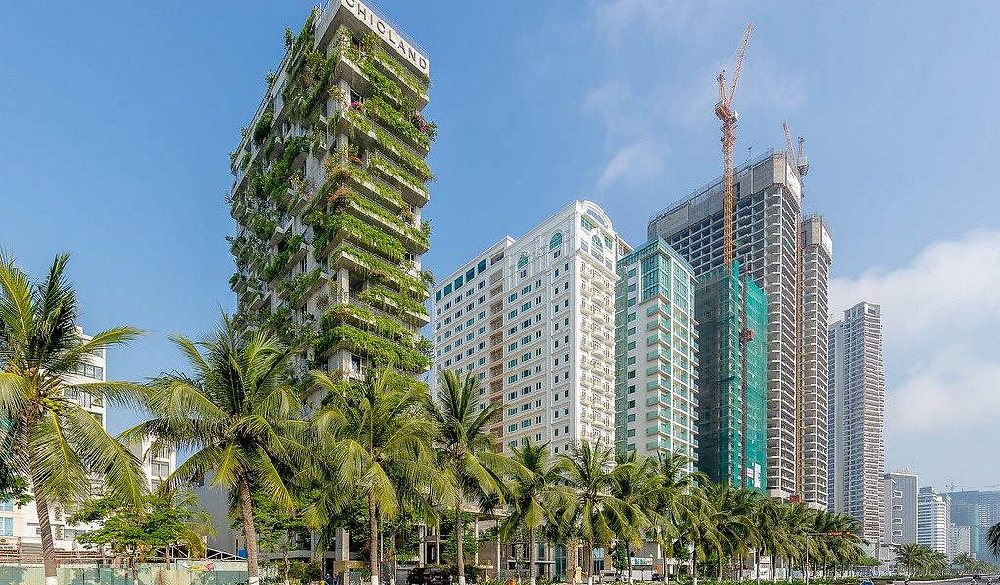

Da Nang Area Guide · 2026
Where to Stay in Da Nang
My Khe, An Thuong, the Han River, Son Tra or Non Nuoc? Pick the right part of Da Nang first. The hotel comes second.
My Khe Beach
The safest answer when you don't know Da Nang yet
If this is your first trip and you're not sure where to stay, don't overthink it. My Khe is the right call. You get a long, clean beach on your doorstep, hotels at every price point from $40 to $250, walkable access to the An Thuong restaurant and bar strip, and Grab availability that makes everywhere else in Da Nang feel 10 minutes away. The airport is 10 minutes by taxi. The Dragon Bridge is 20. Son Tra Peninsula starts at the northern end of the same beach. Almost everything worth doing in Da Nang is reachable from here without it being a production.
The tradeoff: this is the tourist-heavy side of Da Nang. Hotel towers, tour groups, beach bars. If you want a more genuinely Vietnamese city experience rather than a resort strip, the Han River is the better answer. But for a first trip — or any trip where you want beach, convenience and good food nearby — My Khe is hard to beat.
Tradeoff: hotel-heavy and tourist-oriented. Han River suits those wanting a more local city feel.
See our full My Khe hotel guide →
My Khe Beach · Editor's Pick
An Thuong
Where we'd stay if being able to walk everywhere matters
An Thuong isn't a separate city — it sits just inland from My Khe and bleeds into the My An neighborhood, part of the same beachside stretch of Da Nang. What makes it different is the street grid. It's compact, shaded and full of things: Vietnamese coffee shops, bakeries, noodle spots, international restaurants, bars and a handful of good boutique hotels within a few blocks of each other.
The beach is a five-minute walk. Nightlife is outside the door. If you hate needing Grab every time you want coffee or dinner, this is the right pocket. It skews more international and busier than it once did, but it remains the most genuinely walkable part of Da Nang and our personal preference for longer stays.
Tradeoff: getting busier and more tourist-oriented than it used to be.
See nightlife and dining in An Thuong → An Thuong · Da Nang Signature Pick
An Thuong · Da Nang Signature Pick
Where Should You Stay?
Pick what matters most to you. Each card links to the area below. Already know your area? Jump to hotel picks by area ↓


All Five Areas of Da Nang
Filter by what matters most to you. Or scroll through all five below.
Best for First-Time Visitors
My Khe Beach
The easiest all-around base in Da Nang
Da Nang's main beach district runs for several kilometers of wide, accessible sand. The hotel strip on the landward side goes from budget guesthouses to beachfront towers. An Thuong's restaurant and bar cluster is at the northern end. Grab covers anything the legs won't. The airport is 10 minutes away, the Dragon Bridge 20.
Tradeoff: Touristy and hotel-heavy. The most commercial stretch of Da Nang.
If you're reading this guide because you genuinely don't know where to stay — book My Khe.
Hotel picks in My Khe ↓See our full My Khe beach hotel guide →
Best for Walkability
An Thuong / My An
Da Nang's most walkable and liveable pocket
An Thuong is part of the broader My Khe beachside area, not a separate city. What sets it apart is density of good things within a small area: Vietnamese and international restaurants, specialty coffee, cocktail bars, bakeries and the beach within walking distance of each other. It's compact enough that a week here rarely requires Grab for anything except airport runs.
Tradeoff: Increasingly international and tourist-heavy. Busier than it was five years ago.
If you hate needing transportation every time you want coffee, dinner or a drink — stay here.
Hotel picks in An Thuong ↓See An Thuong restaurants and nightlife →
Best for City Life
Han River / Hai Chau
Da Nang's downtown and river district
Bach Dang waterfront, Dragon Bridge, Han Market, local pho shops open at 5am — the Han River side of Da Nang is the city that exists independent of the tourist beach strip. The rooftop views across the river at night are legitimately spectacular. The beach is a 20-minute Grab away, not a 5-minute walk.
Tradeoff: You don't have My Khe outside the door. The beach requires transportation every time.
Choose the river if experiencing the city matters more to you than waking up beside the beach.
Hotel picks in Han River ↓See our full Han River hotel guide →
 Best for Resorts & Families
Best for Resorts & Families
Non Nuoc
When the resort itself is part of the vacation
Non Nuoc sits south of My Khe, past the Marble Mountains on the way toward Hoi An. The beach here is quieter and the hotels are bigger — full resort complexes with large pools, multiple restaurants and beachfront grounds. The Sheraton Grand, Hyatt Regency, Furama and Marriott are all here. You don't need to leave the hotel to have a good day. That's the point.
Tradeoff: Not walkable for Da Nang's restaurant and nightlife scene. You need a car or Grab to explore the city.
Choose Non Nuoc when the resort itself is the vacation — pools, beach and space over urban exploration.
Hotel picks in Non Nuoc ↓See our full family resort guide →
 Best for Scenery & Seclusion
Best for Scenery & Seclusion
Son Tra Peninsula
Extraordinary when you pick the right part of it
Son Tra varies enormously depending on where exactly you stay. The southern and urban fringe near My Khe is a completely different proposition from staying deep on the peninsula — jungle, monkeys, coastline views and a real sense of remove from Da Nang's city life. The InterContinental Sun Peninsula is in this second category: extraordinary setting, genuinely isolated, and one of the finest resort experiences in Vietnam.
If you're looking at properties near the Lady Buddha or further north on the peninsula, check how far they are from restaurants. Some Son Tra addresses are walking distance from My Khe. Others require a dedicated Grab for every meal.
Tradeoff: Depending on location, very removed from restaurants and nightlife. Verify distances before booking.
For an extraordinary resort trip Son Tra is unbeatable. For a first visit centered on exploring Da Nang, choose My Khe instead.
Hotel picks in Son Tra ↓See our luxury hotel guide →
Specific Hotels, By Area
Once you've picked an area above, here's where to actually book.
My Khe Beach


Beach, City or Resort?
Three ways to do Da Nang. Pick the one that matches your trip.
My Khe / An Thuong
My Khe · An Thuong · My An
Beach outside, restaurants and bars walkable, Grab handles everything else. The right choice when you want an active, convenient base. Best for: first trips, couples, food-focused travelers, anyone wanting flexibility.
Han River / Hai Chau
Han River · Bach Dang · Hai Chau
Dragon Bridge, markets, local restaurants and the city's downtown. Best for travelers who care more about experiencing Vietnam than having a beach 100 meters away. Best for: city exploration, business, shorter stays.
Non Nuoc / Son Tra
Non Nuoc · Son Tra Peninsula
Large pools, beachfront grounds, space and quiet. The hotel does more of the work. Best for: families who want a complete resort experience, couples wanting privacy, anyone happy to base themselves at the property.
For most first trips: Beach neighborhood. For a short urban break: Han River. For a family vacation or relaxing escape: Resort.
Da Nang Areas Side by Side
| Area | Beach | Walkability | Food & Bars | Nightlife | Families | Quiet | Best For |
|---|---|---|---|---|---|---|---|
| My Khe | Excellent | Good | Good | Good | Good | Limited | First trips, beach |
| An Thuong | Good | Excellent | Excellent | Excellent | Good | Limited | Walkability, nomads |
| Han River | Limited | Good | Good | Good | Good | Good | City life |
| Non Nuoc | Excellent | Limited | Limited | Limited | Excellent | Excellent | Families, resort |
| Son Tra | Good | Limited | Limited | Limited | Good | Excellent | Luxury, seclusion |
Da Nang in Context
Da Nang is compact. Most areas shown above are 15–25 minutes apart by Grab.
If You Still Can't Decide
Once you've picked an area, our best hotels in Da Nang guide has the specific properties worth booking in each one. Going the family-resort route in Non Nuoc, see the family hotels picks for the kids-club comparison. Splurging on Son Tra, the luxury hotels guide covers the InterContinental and its closest rivals.